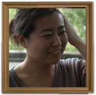

金井塚 睦
◆ひとこと
版画（リトグラフ＆ウォーターレスリトグラフ）を中心に制作しています。
初めての個展なのでワクワクしています。
よろしくお願いします。
1990年 神奈川県生まれ
2014年 多摩美術大学 美術学部絵画学科版画専攻 卒業
現在 多摩美術大学大学院 博士前期課程美術研究科絵画専攻版画研究領域 在籍
◆展示
2013年 世界画廊コレクション展vol.5（渋谷）
2014年 卒業制作展（国立新美術館/文房堂ギャラリー/多摩美術大学）
もうひとつのちいさな卒業・修了制作展（ギャラリーツープラス）
見参-KENZAN-2014(船堀タワーホール)
iki 多摩美術大学 大学院博士前期課程 版画１年（INOAC 銀座並木通りギャラリー）
-アートで祝おう2015-羊がいっぱい!展 行く年（前半）(伊藤忠青山アートスクエア)
2015年 -アートで祝おう2015-羊がいっぱい!展 来る年（後半）(伊藤忠青山アートスクエア)
見参-KENZAN-2015 青組（前半）(伊藤忠青山アートスクエア)
・公募展
2011年 第７９回 日本版画協会版画展 入選
2013年 第９回 全国美術公募作品展 ベラドンナ・アート 入選
■掲載期間：７月１５日（水）～７月３１日（金）